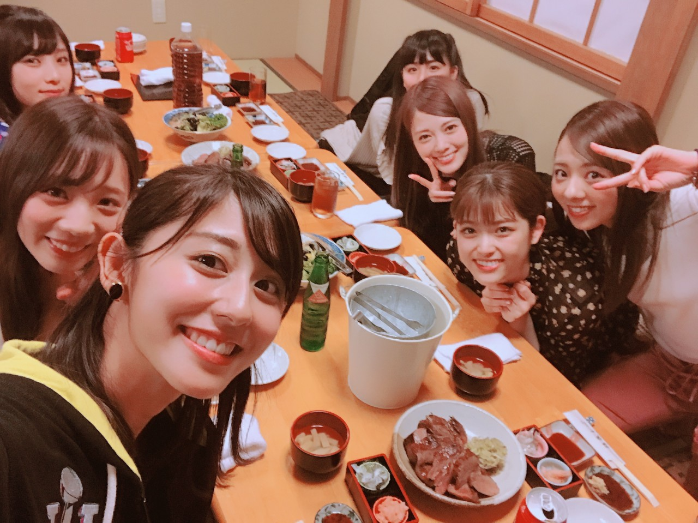
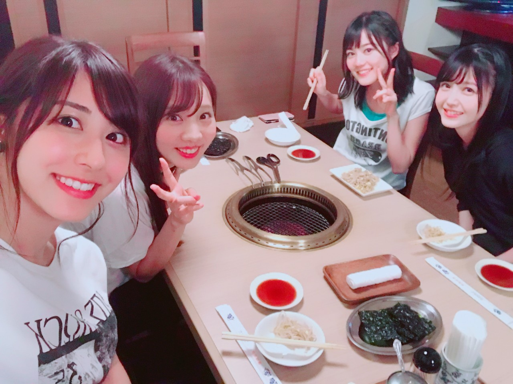
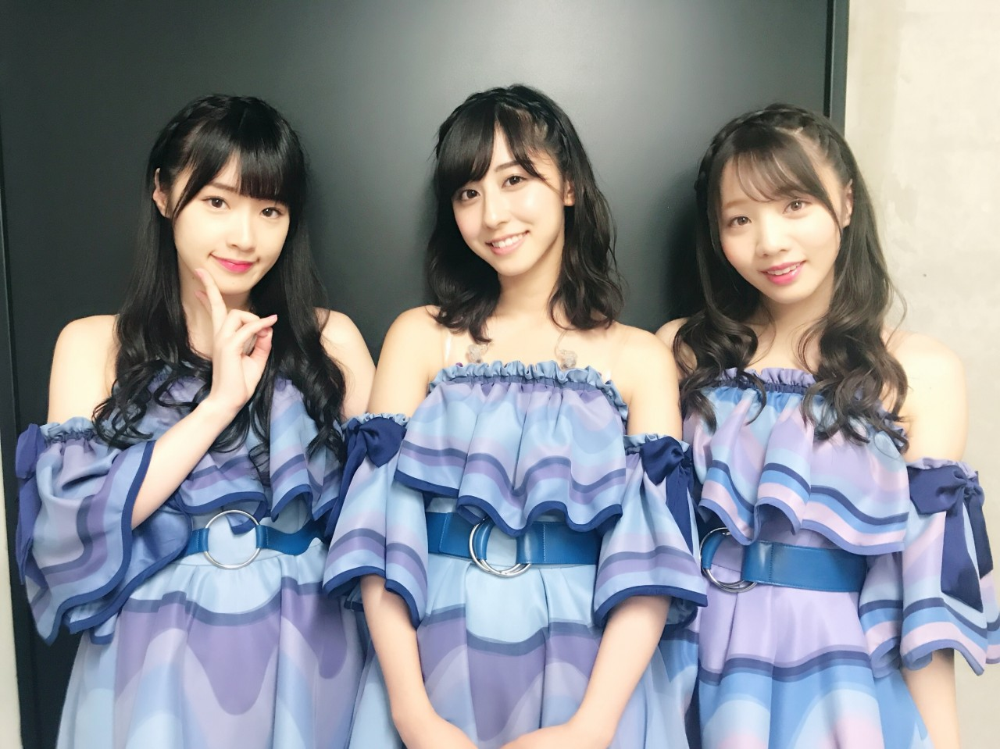
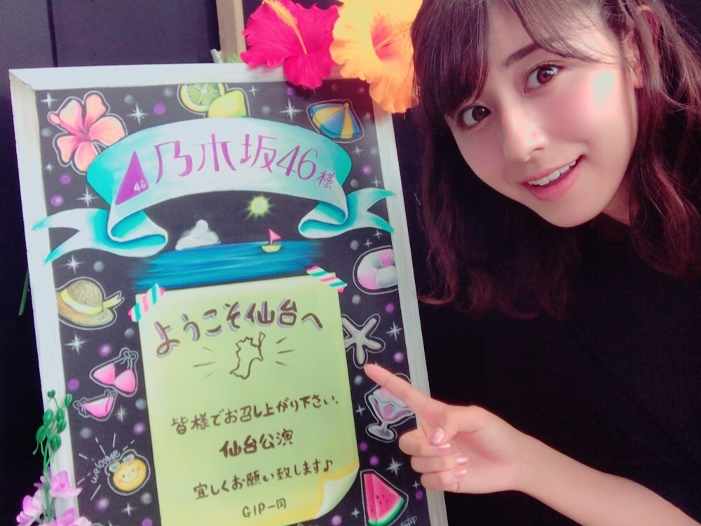
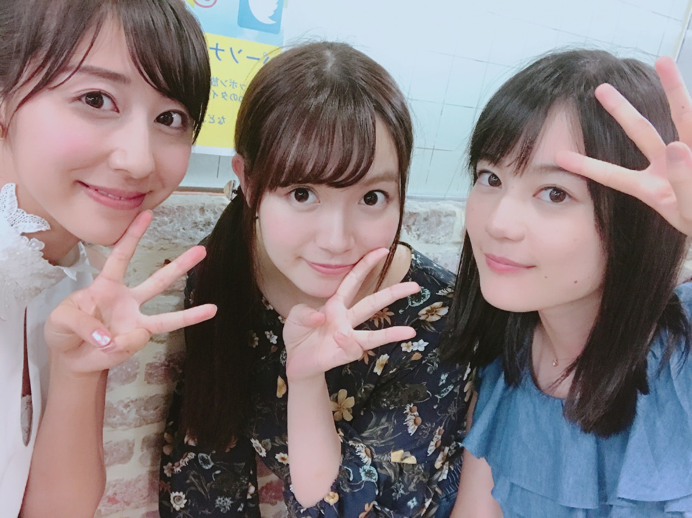

| 2017/08 14 Mon | 斎藤ちはる 仙台とANN |
ちはるーむへようこそ
全国ツアー仙台公演、
ありがとうございました！！
4公演も出来たのは初めて。
有難いことですヽ(；；)丿
これからどんどん続いていく地方公演、
皆さん待っていてくださいね〜☺︎
仙台でのご飯会(かりんブログ曰く飯場)に
2日間とも参加してきました！
久しぶりに2日間参加したけど
とっても楽しかった〜
たらふく食べてしまった〜
かりんブログには全体写真だったけど
私のブログでは自撮り写真を...
１日目＊

私たちのテーブルはこのメンバー☺︎
まっつんは相変わらず沢山食べてて
微笑ましかった〜♡
厚切りすぎる牛タンや
分厚くてサクサクなトンカツ、
そして色々な刺身やウニに
みんな目がハートでした！
2日目＊

1期生３人に、久保ちゃん
久保ちゃん、こんなに細いのに
このテーブルの誰よりも食べていて
びっくりしました！
初めて沢山お話ししたけど
よく笑ってくれて、よく話してくれて、
ノリもよくて、楽しい子でした\( ˆ ˆ )/
真夜中のノリの変ないくちゃんと
それについてく変な久保ちゃんの
動画も撮れたからどっかでお見せしたいな〜笑
仙台の最終公演では、
愛未とずーとお揃いの髪型で出ました◎
気付いていた方がいたら凄い...！

左耳から右耳に向かって編み込みをした、
編み込みカチューシャに、巻き髪。
たまにはお揃いもいいね♡
と３人で話していました
またやろうかなっ

ちなみに牛タンは3日間、昼も夜も食べたので
半年分は食べました。笑
大満足♡
明後日からの大阪公演も楽しんできます！
そして先日のオールナイトニッポンを
聞いてくださった皆さん
ありがとうございました！！
急遽でしたが、showroom含め
沢山の方が見たり聞いてくださって
とっても嬉しかったです。

相変わらずテンションがやばいいくちゃんと
それをビシッと突っ込むめーちゃん。
2人とも本当に面白くて
2人といると楽しくて、
中3組でもっともっと活動したいなって
改めて思いました。
３人でやっていないこと沢山ある。
また何か出来るといいな◎
斎藤ちはる